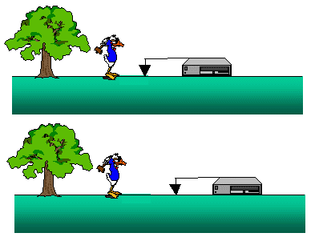
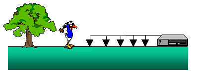

Designing an Efficient Field Procedure
The data required for interpretation when using the seismic refraction method consists of a set of travel times versus distance between the source and the geophone. This distance is usually referred to as offset. Obviously, when looking at the travel-time curves that we have seen so far, if we were to determine the time of arrival of the first arrival at one distance we would not have enough information to determine the subsurface structure.
So, how do we actually collect the observations we need? As shown below, one strategy would be to place a single geophone at some location and record the ground motion produced by a source at another location. We could then move the geophone to a new location, keep the source at the same location, and repeat the experiment as shown below.
With this acquisition scheme, for each source location we would have to pick up and move the receiver and the recording instrument many times to collect enough observations to define the shape of the travel-time curve with offset. A better (i.e., less time consuming) strategy would be to build a recording instrument that could record the ground motion at many different receivers at the same time. We could then connect receivers at all of the offsets we want in order to record data to this system and acquire all of the observations at once. This scheme is shown below.
This is how seismic observations are actually collected in the field. Recording systems used in the oil industry are now capable of measuring the ground motion of thousands of geophones at once. For environmental and shallow refraction surveys, recording systems capable of recording the ground motion from as few as 12 or 24 stations are used, but systems capable of recording input from 48 to 96 geophones are more typical.
Seismology
- Simple Earth Model: Low-Velocity Layer Over a Halfspacepg 11
- Head Wavespg 12
- Records of Ground Motionpg 13
- Travel-time Curves for a Simple Earth Modelpg 14
- First Arrivalspg 15
- Determining Earth Structure from Travel Timespg 16
- Derivation of Travel Time Equationspg 17
- High-Velocity Layer Over a Halfspace: Reprisepg 18
- Picking Times of Arrivalspg 25
- Wave Propagation with Multiple Horizontal Layerspg 26
- Travel Time Curves from Multiple Horizontalpg 27
- Hidden Layerspg 28
- Head Waves from a Dipping Layer: Shooting Down Dippg 29
- Head Waves from a Dipping Layer: Shooting Up Dippg 30
- A Field Procedure for Recognizing Dipping Bedspg 31
- Estimating Dips and Depths from Travelpg 32